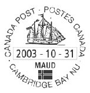

Cambridge Bay PO pictorial cancel
Maud
- Status
- Expired
- Run dates
- 2003-01-01 to ?
- Design
- "MAUD"; ship
- Ink colour
- Black
- Designer
- Unknown
- Post office
- Cambridge Bay PO
4 Kamotik Rd
Cambridge Bay, NU
X0B 0C0 - Subjects
- ship, vessel, transportation
This cancel is retired, so the post office can no longer apply it. Covers with it turn up from dealers and other collectors.
 Iqaluit POInukshuk
Iqaluit POInukshuk